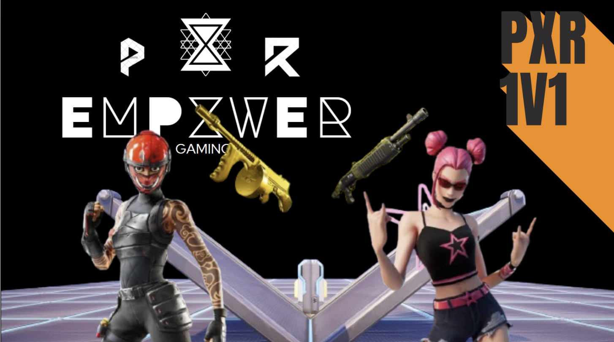

EMPXWER GAMING
Empxwer Zone Wars is an exhilarating Fortnite map designed for competitive players and casual gamers alike. Featuring a dynamic, fast-paced battlefield with custom terrain, tactical hiding spots, and balanced loot drops, it challenges players to adapt and strategize as the storm closes in. The map emphasizes teamwork, quick decision-making, and skilled building, making every round an intense fight for survival. With a sleek ui inspired by the Empxwer Gaming , it delivers a unique experience that sets it apart from standard Zone Wars maps. Best of all, Empxwer Zone Wars is specifically designed to help players climb the ranks quickly, offering the perfect environment to sharpen your skills and achieve Unreal rank in no time.
Empxwer 1v1s is the ultimate Fortnite map for players looking to dominate in head-to-head battles and refine their mechanics. Designed with precision and balance in mind, the map features an creative 1v1-style layout optimized for intense 1v1 showdowns. Inspired by Empxwer Gaming, the map ensures a competitive atmosphere where players can focus on building, editing, and aim training. With fair loot options, and zero distractions, Empxwer 1v1s is perfect for warming up or settling scores with friends. Plus, it’s an ideal tool for improving your skills and climbing the ranks, helping you reach Unreal rank faster than ever!